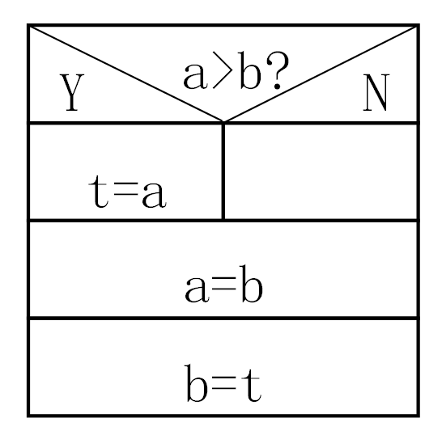
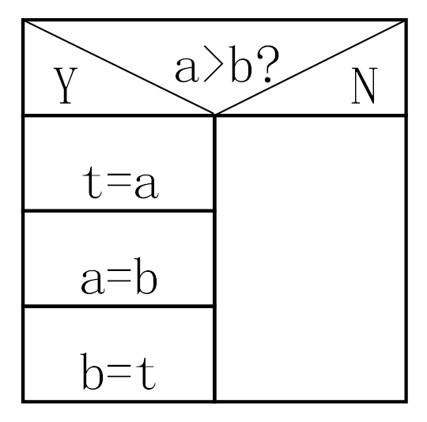
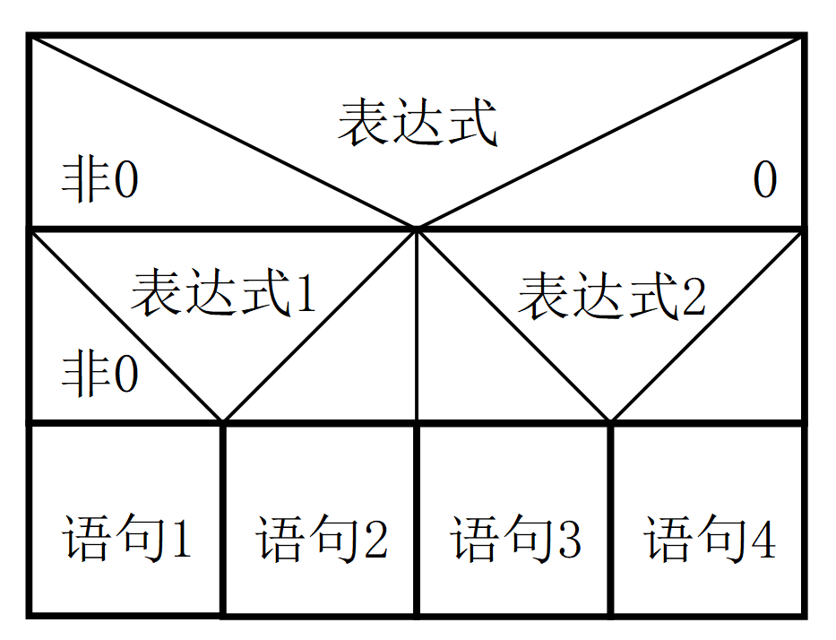
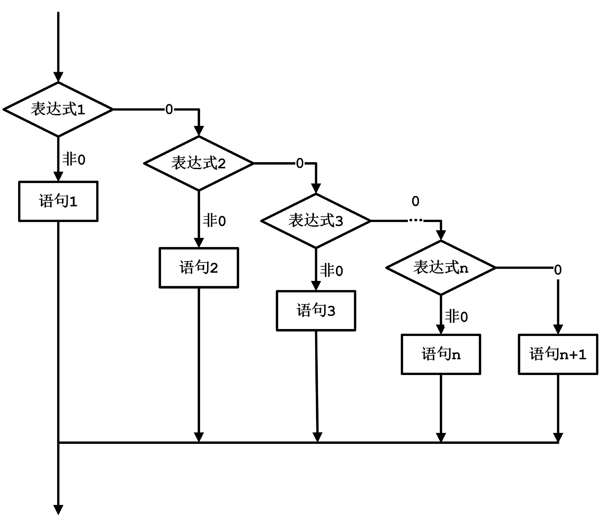

武汉理工大学 人工智能学院
C 程序设计基础
第 3 章（中）if 语句
主讲：李 民
本讲内容
❓为什么需要选择结构
生活中的选择与程序中的选择
🚪单分支 if（含流程图）
if (表达式) 语句
🔀双分支 if-else（含流程图）
if (表达式) 语句1 else 语句2
❓条件运算符 ? :
三目运算符简化写法
🪆嵌套 if / else if（含流程图）
多分支的常用写法
⚡短路求值（进阶）
&& 与 || 的"偷懒"机制
🧩综合应用
排序、加法练习、闰年
📚常见错误与小结
易错点总结与回顾
本讲学习目标
- ① 选择结构理解生活中的选择，能转换成程序中的选择
- ② 单分支 if掌握
if语句格式与执行过程（含流程图） - ③ 双分支 if-else掌握
if-else语句格式与执行过程（含流程图） - ④ 条件运算符会用
? :简化简单的if-else - ⑤ 短路求值理解
&&/||的短路特性，能写出更安全的判断 - ⑥ 嵌套 if会用
else if链实现多分支（含流程图） - ⑦ 常见错误大括号、
=与==、分号、else配对、输入缓冲区
为什么需要选择结构
🏠生活中的选择
· 如果今天没课，就去图书馆自习；否则去上课。
· 如果王者荣耀赢了，再开一局；否则洗洗睡。
💻程序中的选择
· 根据用户输入，执行不同的操作
· 判断数据是否满足条件，决定下一步流程
结论
选择结构让程序有了"判断力"，能根据不同的输入走不同的路。
单分支 if 语句
执行过程
- 计算表达式的值，值为非 0 即"真"、0 即"假"。
- 非 0 → 执行内嵌语句
- 0 → 跳过，执行下一条
格式
if ( 表达式 )
内嵌语句;
示例
int score = 85; if (score >= 60) printf("及格！\n");

读图真 → 执行语句；假 → 跳过，两条路都汇合到结束。
单分支 if 判断题（对照流程图）
问题当
a > b 时交换 a、b 的值，哪段代码正确？
❌代码段 A
if (a > b)
t = a;
a = b;
b = t;

只有 t=a 受 if 控制，a=b / b=t 在 if 语句外面，总会执行。
✅代码段 B
if (a > b) {
t = a;
a = b;
b = t;
}

三条语句都在 {} 内，作为一个整体受 if 控制。
单分支 if 语句：表达式的类型
说明if 后圆括号内是表达式，值为非 0 即"真"、0 即"假"（关系/逻辑运算符见第3章上）。的表达式可以是任何类型，只要能算出 0 或非 0。
if (a == b && x == y) printf("a=b, x=y"); if (3) printf("OK"); // 3 非0，恒真 if (a) printf("%d", a); // 等价于 if(a!=0) if (x) ... // 等价于 if(x!=0) if (!x) ... // 等价于 if(x==0)
常见写法
if (x) ≡ if (x != 0)
if (!x) ≡ if (x == 0)
单分支——复合语句（大括号的重要性）
问题多条语句必须用大括号
{ } 括起来，否则只有第一条受 if 控制。
❌错误示例
if (score >= 60)
printf("及格！\n");
printf("拿学分！\n"); // 总执行
第二句不受 if 控制，逻辑错误。
✅正确示例
if (score >= 60) {
printf("及格！\n");
printf("拿学分！\n");
}
两条语句整体受 if 控制。
结论无论几条语句，推荐总是加大括号，更清晰、更安全。
例：模拟路口交通信号灯系统
要求输入 g/G → 可通行；r/R → 不可通行；y/Y → 等待。
思路三个独立的
if 语句分别处理三种字符，互不干扰。
运行输出
输入 g ：Green light on. Go!
输入 r ：Red light on. Stop!
输入 y ：Yellow light on. Wait!
char light; // 信号灯 scanf("%c", &light); if (light == 'g' || light == 'G') printf("Green light on. Go!\n"); if (light == 'r' || light == 'R') printf("Red light on. Stop!\n"); if (light == 'y' || light == 'Y') printf("Yellow light on. Wait!\n");
双分支 if-else 语句
执行过程
- 表达式非 0 → 执行语句 1
- 表达式为 0 → 执行语句 2
格式
if ( 表达式 ) 语句1; else 语句2;
示例
if (steps > 10000) printf("运动达人！\n"); else printf("加油哦！\n");
注意
else 不能单独存在，必须与 if 配对。
读图非此即彼：有且仅有一个分支被执行。
例：信号灯（双分支写法）
要求输入 g/G 提示可通行，其他字符提示不可通行。
char light; scanf("%c", &light); if (light == 'g' || light == 'G') printf("Green light on. Go!\n"); else printf("Green light not on. Cannot go!\n");
对比单分支用三个独立 if；双分支用一个 if-else 处理"通行/不通行"。
运行输出
输入 g ：
Green light on. Go!
输入 x ：
Green light not on.
Cannot go!
例：判断三边能否构成三角形
分析任意两边之和 > 第三边则可构成三角形，计算面积；否则报错。
#include <stdio.h> #include <math.h> int main() { double a, b, c, s, area; scanf("%lf %lf %lf", &a, &b, &c); if (a+b>c && a+c>b && b+c>a){ s = 0.5*(a+b+c); area = sqrt(s*(s-a)*(s-b)*(s-c)); printf("area=%f\n", area); } else printf("Data error!\n"); return 0; }
海伦公式
\[ s=\frac{1}{2}(a+b+c) \] \[ area=\sqrt{s(s-a)(s-b)(s-c)} \]
关键判定用
&& 连三个不等式。
输入 → 输出
3 4 5 → area=6.000000
1 2 3 → Data error!
条件运算符 ? :
格式
表达式1 ? 表达式2 : 表达式3
执行过程
- 先计算表达式 1
- 若为 非 0（真） → 取表达式 2 的值
- 若为 0（假） → 取表达式 3 的值
特点它是 C 语言中唯一一个三目运算符，常用于简化简单的 if-else 赋值。
示例：求两数最大值
max = (a > b) ? a : b;
等价于 if-else
if (a > b) max = a; else max = b;
运行示例
设
执行
max 结果为 8。
因为
设
int a = 5, b = 8;执行
max = (a > b) ? a : b; 后，max 结果为 8。
因为
a > b 为假（0），所以取 b 的值。
条件运算的常见应用
| 目的 | 表达式 |
|---|---|
| 求绝对值 | abs = (x >= 0) ? x : -x; // x 为int |
| 非负整数奇偶性 | odd = (x % 2 == 1) ? 1 : 0; |
| 小写转大写 | c = (c>='a' && c<='z') ? c-32 : c; |
| 三数最大值 | max=(a>b && a>c)? a : (b>c ? b:c); |
| 判断 x 符号 | s = x>0 ? 1 : (x<0 ? -1 : 0); |
建议当 if-else 的两个分支都是给同一变量赋值时，可用条件运算符简化。
嵌套 if 语句
格式
if (表达式) { if (表达式1) 语句1; else 语句2; } else { if (表达式2) 语句3; else 语句4; }
示例
if (a > b) { if (a > c) max = a; else max = c; } else { if (b > c) max = b; else max = c; }
执行从上到下依次判断，遇第一个真条件执行对应语句后跳出。

读图外层分支里再嵌一层判断，逐层缩小范围。
例：判断 x 的符号（三种嵌套写法）
要求 x > 0 时 y = 1；x = 0 时 y = 0；x < 0 时 y = -1。
写法一：按 ≥ 0 分
if (x >= 0) if (x == 0) y = 0; else y = 1; else y = -1;
此写法完整嵌套了 if-else，逻辑正确，省略了大括号。
写法二：按 ≠ 0 分
if (x != 0) if (x > 0) y = 1; else y = -1; else y = 0;
先判非零，内层判正负。
写法三：if 嵌在 else 里
if (x > 0) { y = 1; } else { if (x == 0) y = 0; else y = -1; }
✅ 利用大括号
{ } , 外层 else 处理 ≤0，内层细分 =0 与 <0。
关键提醒
C 语言完全无视代码缩进（这与 Python 截然不同），程序究竟是哪个 if 与哪个 else 配对，只看大括号和“就近配对”规则。
最佳实践：引出 else if 结构
思考如果像前一页写法一那样不断嵌套，代码会越来越往右缩进，变得极难阅读。
C 语言提供了什么样的简化写法？
C 语言提供了什么样的简化写法？
1. 嵌套但不加外层大括号
if (x > 0) y = 1; else if (x == 0) y = 0; else y = -1;
省去了外层的大括号，代码看起来稍微短了一点，但依然保留了“阶梯状”的嵌套结构。
2. 扁平化写法：else if
if (x > 0) y = 1; else if (x == 0) y = 0; else y = -1;
平级展开，没有层层缩进，看起来最舒服，这也是我们推荐的最佳写法。
结论
else if 本质上就是“嵌套在 else 里的 if”去掉了多余的大括号。它不仅让代码排版变扁平，还能天然避免“悬空 else”造成的配对混乱，是处理多分支的最佳选择！
经典陷阱：悬空 else
问题C 语言中，如果省略大括号，
比如：若 a > b 且 c > d，x = 1；若 a < b，x=2；请写出代码。
else 到底与哪个 if 配对？
比如：若 a > b 且 c > d，x = 1；若 a < b，x=2；请写出代码。
原始代码（缩进有误导性）
if (a > b) if (c > d) x = 1; else x = 2;
真相
虽然缩进看着像外层，但 C 语言规定：
虽然缩进看着像外层，但 C 语言规定：
else 永远与离它最近、尚未配对的 if 配对， 即与内层 if (c > d)配对，而非外层 if (a > b)。
✅ 修正：用大括号强制配对
if (a > b) { if (c > d) x = 1; } else x = 2;
原理
加了花括号
{ } 之后，内层的 if 就成了一个完整的整体，else 就只能和 外层的 if (a > b) 配对了。
最佳实践：引出 else if 结构
思考如果像写法三那样不断嵌套，代码会越来越往右缩进，变得极难阅读。C 语言提供了什么样的简化写法？
加了大括号的嵌套（层级深）
if (x > 0) { y = 1; } else { if (x == 0) { y = 0; } else { y = -1; } }
✅ 扁平化写法：else if
if (x > 0) y = 1; else if (x == 0) y = 0; else y = -1;
C 语言允许将
else 和下一个 if 连写在一起，形成平级的多分支结构。
结论
它既保留了多分支的逻辑，又让代码排版变得扁平、清晰，是处理多分支的最佳选择！
else if 本质上就是“嵌套在 else 里的 if”去掉了多余的大括号。它既保留了多分支的逻辑，又让代码排版变得扁平、清晰，是处理多分支的最佳选择！
else if 多分支结构
格式
if (表达式1) 语句1; else if (表达式2) 语句2; ... else 语句n;
示例
int score = 85; if (score >= 90) printf("A"); else if (score >= 80) printf("B"); else if (score >= 60) printf("C"); else printf("D");
说明这是双分支在
else 中嵌套 if 的简化形式，多分支最常用。

读图逐层判断，命中即执行并结束；全不中则走 else。
例：根据分数评定等级
要求≥90→A ≥80→B ≥70→C ≥60→D <60→E（不及格）
int score; scanf("%d", &score); if (score >= 90) printf("A\n"); else if (score >= 80) printf("B\n"); else if (score >= 70) printf("C\n"); else if (score >= 60) printf("D\n"); else printf("E\n");
关键
不用写
前面已按序排除，能走到这行必然 <90。
顺序很重要！
不用写
score < 90：前面已按序排除，能走到这行必然 <90。
顺序很重要！
运行输出
输入 85 → B
输入 58 → E (不及格)
例：输入年、月，输出该月天数
分析大月 31 天；小月 30 天；2 月闰年 29、平年 28。闰年：
(year%4==0 && year%100!=0) || year%400==0。
int year, month, days; scanf("%d %d", &year, &month); if (month==1||month==3||month==5||month==7|| month==8||month==10||month==12) days = 31; else if (month==4||month==6||month==9||month==11) days = 30; else { if ((year%4==0 && year%100!=0) || year%400==0) days = 29; else days = 28; }
输入 → 输出
2024 2 → 29 2023 2 → 28 2023 4 → 30
代码写完了？别忘了测试边界值！
核心思想
写对普通数据不难，难的是处理极端情况（边界值）。输入刚好等于条件的分界点时，程序能正确执行吗？
案例：分数等级（≥90 为 A）
if (score >= 90) printf("A\n"); else if (score >= 80) printf("B\n"); else if (score >= 60) printf("C\n"); else printf("D\n");
找边界
分界点在哪里？90、80、60。
所以测试时，不能只测 95、85、65（中间值），必须测分界点左右！
分界点在哪里？90、80、60。
所以测试时，不能只测 95、85、65（中间值），必须测分界点左右！
测试用例设计（边界值分析）
| 测试场景 | 输入 score | 预期输出 |
|---|---|---|
| 最高分 | 100 | A |
| A 的边界（内） | 90 | A |
| A 的边界（外） | 89 | B |
| B 的边界（内） | 80 | B |
| B 的边界（外） | 79 | C |
| C 的边界（内） | 60 | C |
| C 的边界（外） | 59 | D |
| 非法输入 | -5 | D（未做校验） |
进阶
如果输入了
所以在实际开发中，需要先用
-5 或 150 这样的非法分数，上述代码会进入 else 打印 "D"。所以在实际开发中，需要先用
if (score > 100 || score < 0) 拦截非法数据，再进行等级判断，这叫做“防御性编程”。
悬空 else 对比
思考以下三段代码运行结果一样吗？它们分别是怎么配对的？
1. 无大括号（内层配对）
int a=2, b=-1, c=2; if (a < b) if (b < 0) c = 0; else c++; printf("%d\n", c);
else 与最近的内层 if 配对。
2. 内层加大括号
int a=2,b=-1,c=2; if (a < b) { if (b < 0) { c = 0; } else { c++; } } printf("%d\n", c);
内层
if-else 被大括号包成了一个整体，外层的 if 控制它。
3. 外层强制配对
int a=2,b=-1,c=2; if (a < b) { if (b < 0) { c = 0; } } else { c++; } printf("%d\n", c);
外层大括号封闭了内层
if，外层的 else 与外层 if 配对。
单选练习
题目以下程序段运行后的输出结果是（ ）。
int x=1, y=0;
if (!x) y++;
else if (x == 0)
if (x) y += 2;
else y += 3;
printf("%d\n", y);
分析x=1→
!x=0 跳过；x==0 为假跳过 else if 整体；y 保持 0，输出 0。嵌套务必加大括号。
综合应用 1：三个数排序（年龄排序）
问题输入三个人的年龄，按从小到大输出。
方法一：比较交换，使 a ≤ b ≤ c
if (a > b) { t=a; a=b; b=t; } // 调 a,b
if (a > c) { t=a; a=c; c=t; } // 调 a,c，a 最小
if (b > c) { t=b; b=c; c=t; } // 调 b,c，c 最大
printf("%d %d %d", a, b, c);
思路三次比较交换，保证 a ≤ b ≤ c。
综合应用 1：三个数排序（方法二，保持原值不变）
写法一：逻辑嵌套（if 嵌套）
// 逐层缩小范围，层层嵌套 if (a > b) { if (a > c) { if (b > c) printf("%d %d %d", c, b, a); else printf("%d %d %d", b, c, a); } else { printf("%d %d %d", b, a, c); } } else { if (b > c) { if (a > c) printf("%d %d %d", c, a, b); else printf("%d %d %d", a, c, b); } else { printf("%d %d %d", a, b, c); } }
方法二：条件穷举（else if）
// 罗列 6 种大小的所有可能 if (a <= b && b <= c) printf("%d %d %d", a, b, c); else if (a <= c && c < b) printf("%d %d %d", a, c, b); else if (b <= a && a <= c) printf("%d %d %d", b, a, c); else if (b <= c && c < a) printf("%d %d %d", b, c, a); else if (c <= a && a <= b) printf("%d %d %d", c, a, b); else printf("%d %d %d", c, b, a);
三数排序（方法三：条件运算符）
min = (a < b && a < c) ? a : (b < c ? b : c);
max = (a > b && a > c) ? a : (b > c ? b : c);
mid = a + b + c - min - max;
printf("%d %d %d", min, mid, max);
提醒方法三虽"巧妙"，但三层嵌套
? : 可读性下降——再次印证：复杂逻辑用 if 更清楚。
<--（上一页的方法二）写法对比总结
· 写法二逻辑更具层次：先按 a 和 b 的大小分成两大阵营，再在各个阵营里比较 c，如同查字典一样逐层排查。
· 写法一思路极其直白：把 3 个数所有可能的大小关系（3! = 6 种）都列出来，直接对应输出。
· 局限：如果变成 4 个数排序，写法一将变成 24 个分支，写法二会嵌套成“阶梯状”。所以实际工程中排序不会用这种穷举法，而是用前一页的比较交换法。
· 写法二逻辑更具层次：先按 a 和 b 的大小分成两大阵营，再在各个阵营里比较 c，如同查字典一样逐层排查。
· 写法一思路极其直白：把 3 个数所有可能的大小关系（3! = 6 种）都列出来，直接对应输出。
· 局限：如果变成 4 个数排序，写法一将变成 24 个分支，写法二会嵌套成“阶梯状”。所以实际工程中排序不会用这种穷举法，而是用前一页的比较交换法。
综合应用 2：随机加法练习
要求
计算机随机出 100 以内加法题，回答后：
· 正确 → 鼓励；
· 错误 → 询问是否看答案。
计算机随机出 100 以内加法题，回答后：
· 正确 → 鼓励；
· 错误 → 询问是否看答案。
运行示例
Please compute: 37 + 58 = 95⏎
Right!
（若输入的答案错误：）
Please compute: 37 + 58 = 90⏎
Wrong, your answer: 90.
See answer(y/n)? y⏎
Right answer: 95
避坑
读取字符前留个空格：
scanf(" %c", &q);，以跳过上次输入留下的回车符。
// 随机加法练习 srand(time(0)); // 随机种子 a = rand() % 100; b = rand() % 100; c = a + b; printf("Please compute: %d + %d = ", a, b); scanf("%d", &d); if (c == d) printf("Right!\n"); else { printf("Wrong, your answer: %d.\n", d); printf("See answer(y/n)?"); scanf(" %c", &q); // %c 前加空格 if (q == 'y' || q == 'Y') printf("Right answer: %d\n", c); }
随机数函数 rand() 和 srand()
- ① rand()产生
[0, 32767)的伪随机整数 - ② srand()设种子，一般用
srand(time(0))（当前秒） - ③ 头文件
#include <stdlib.h>与#include <time.h>
#include <stdlib.h> #include <time.h> int a, b; srand(time(0)); // 设定种子 a = rand() % 100; // 0~99 随机数 b = rand() % 100;
要点不调用
srand()，每次运行产生的序列相同。
注意事项与常见错误
| 错误类型 | 说明 | 正确做法 |
|---|---|---|
| 忘记大括号 | if 后多条语句未用 {}，仅第一条受控 | 即使一条也建议加 {} |
| = 误写为 == | 赋值误用于判断 | 比较用 if (a == b) |
| 分号位置错误 | if (a>b); 多分号，if 空转 | 去掉多余分号 |
| else 未配对 | else 单独出现，无法编译 | 检查 if-else 配对 |
| 悬空 else | else 与错误的 if 配对 | 用大括号强制配对 |
| 短路误用 | 依赖短路执行有副作用语句 | 把必执行逻辑独立写出 |
| 输入缓冲区 | 上次换行符影响后续字符读入 | 加 getchar() 或 " %c" |
本讲小结
- ① 单分支 ifif (表达式) 语句；非0执行、0跳过（含流程图）
- ② 双分支 if-else两选一；else 须与 if 配对（含流程图）
- ③ 复合语句多条语句用
{ }括起来 - ④ 条件运算符
a?b:c，适合简单赋值 - ⑤ 短路求值
&&遇假即停、||遇真即停 - ⑥ 多分支嵌套 if / else if 链（含流程图），顺序很重要
- ⑦ 常见错误大括号、= 与 ==、分号、else 配对、短路误用、缓冲区
谢 谢
下一讲：第 3 章（下）switch 语句
1 / 31
← → 翻页 · 空格下一页 · B 黑屏 · O 目录 · Esc 关闭